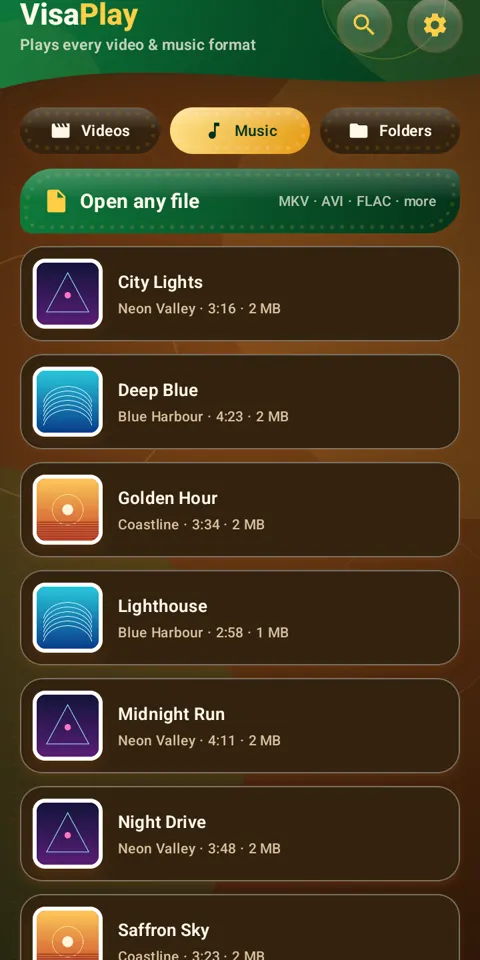
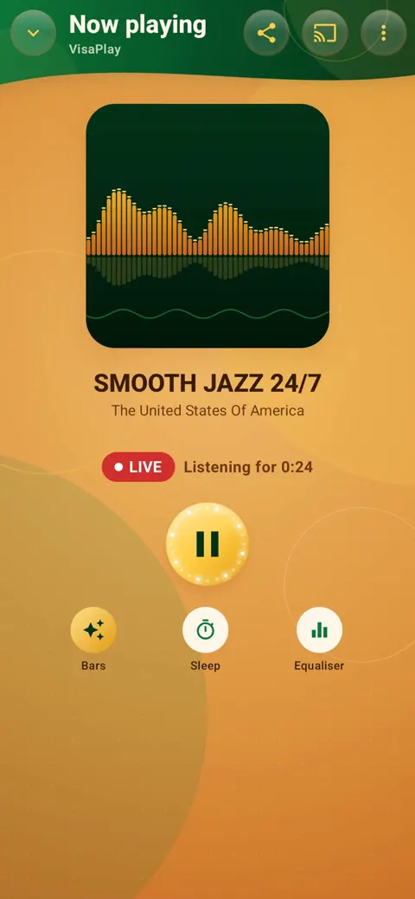
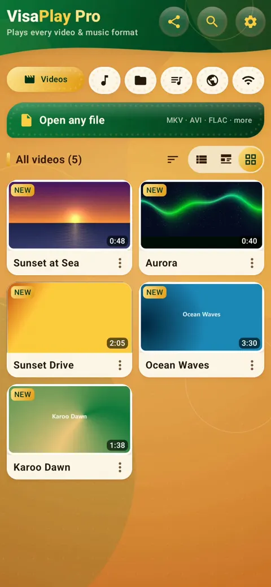
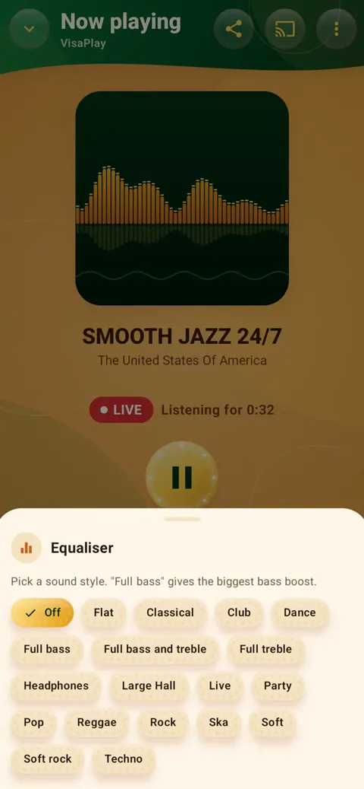
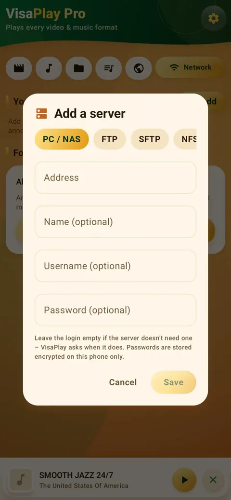

Plays almost everythingFree
Videos, music and folders, neatly sorted. Continue watching picks up exactly where you stopped.
MKV, AVI, FLAC, Dolby sound, styled subtitles – VisaPlay just plays them. Then add thousands of radio stations, your PC's movies and your TV, all from one small app.






From the WhatsApp voice note to the 4-hour MKV movie on your PC – VisaPlay handles it.
Videos, music and folders, neatly sorted. Continue watching picks up exactly where you stopped.
Video thumbnails play a short silent clip, so you see what's inside before you tap.
Screen off, phone in your pocket – control it from the lock screen, headphones or car Bluetooth.
Local favourites and stations from everywhere. Search by name or style – jazz, gospel, news…
Presets for every taste – Rock, Pop, Live, Full bass. Your music, your way.

Watch the movies on your home computer, NAS, Plex or Kodi – without copying them to your phone.
No setup. Open VisaPlay and your videos and music are already there.
VisaPlay finds every video and song on your phone. Tap Open any file for something in your downloads – or use Open with VisaPlay from WhatsApp or Files.
List for names only, Detail for pictures and sizes, or Preview where clips quietly play. Sort by newest, name, size or length.
On video, swipe left side for brightness, right side for volume, sideways to seek. Double-tap to skip. On music: shuffle, repeat, sleep timer.
Tap ⋮ on any song or video: Play next, Add to queue or Add to playlist. Tap the heart for favourites.
Open Online, search a station or a style and tap it. It keeps playing with the screen off Pro.
💡 Works with Windows shares, Plex, Kodi and other DLNA media servers.
💡 With VisaSched your station can start by itself – say, every weekday at 4 pm.
The free version plays every format with no limits. Pro adds the radio, your TV and your PC.
| What you get | Free | Pro |
|---|---|---|
| Playing | ||
| Every video & music format, Dolby & DTS sound | Yes | Yes |
| Subtitles & audio tracks | Yes | Yes |
| Background music, lock screen & Bluetooth controls | Yes | Yes |
| Playlists & favourites | Yes | Yes |
| Continue where you stopped | Last 5 | Every file |
| Pro powers | ||
| Thousands of internet radio stations | No | Yes |
| Cast to your TV | No | Yes |
| Play from PC, NAS, Plex, Kodi | No | Yes |
| Play any link or live stream | No | Yes |
| Picture-in-picture | No | Yes |
| Equaliser with presets & bass boost | No | Yes |
| Speed, sleep timer, A-B repeat, screen lock | No | Yes |
| Find voice notes by person | No | Yes |
| Import & export .m3u playlists | No | Yes |
| No ads | No | Yes |
Google Play shows the exact price for your country. No subscription, ever.
No account, no sign-up, nothing uploaded. Logins for your own computers are kept encrypted on your phone only.
Almost certainly. VisaPlay uses the LibVLC engine by VideoLAN, which plays nearly every video and audio format – no codec packs needed.
Internet radio is part of VisaPlay Pro (a once-off purchase). Radio uses mobile data or Wi-Fi like any stream.
Yes – music carries on with the screen off and works with Bluetooth controls. VisaPlay also fits 9-inch car radio screens.
No. Use the same Google account and tap Restore purchase in Settings.
Every Visa app works on its own – and they find each other by themselves. VisaSched can even start the others at the right moment.